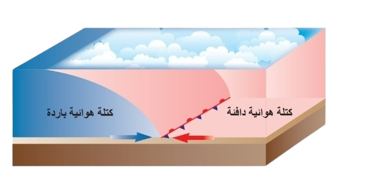
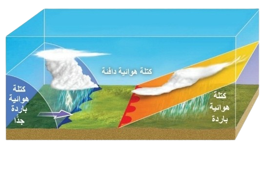
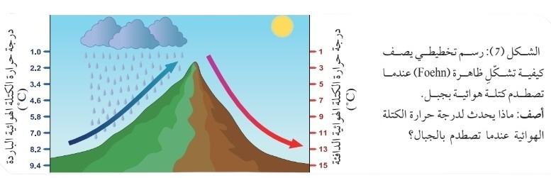

تنتج الجبهات الهوائية من التقاء كتل هوائية مختلفة الخصائص (درجة الحرارة والرطوبة)، وتؤثر أنظمة الضغط الجوي (مرتفعات ومنخفضات) على الطقس، مما يتحكم في حركة الرياح والظواهر الجوية مثل الأمطار والعواصف.
تتشكل عند التقاء كتل هوائية مختلفة (دافئة وباردة). تشمل:
الجبهة الدافئة (Warm Air Front): تتشكل عندما تتحرك كتلة دافئة نحو كتلة باردة، مما يسبب أمطارًا خفيفة.
الجبهة الباردة (Cold Air Front): تتشكل عندما تتحرك كتلة باردة نحو كتلة دافئة، مما يؤدي إلى أمطار غزيرة أو عواصف.
الجبهة الثابتة (Stationary Air Front): تتشكل عندما لا تتحرك كتلتان هوائيتان مختلفتان نسبة لبعضهما، مما يسبب طقسًا رطبًا وغيومًا لأيام.
الجبهة المقفلة (Occluded Air Front): تتشكل عندما تُحصر كتلة دافئة بين كتلة باردة وكتلة أكثر برودة، مما يؤدي إلى أمطار أو ثلوج.
تُرسم الجبهة الهوائية الثابتة على خريطة الطقس بخط منحني، مع مثلثات زرقاء تشير إلى الكتلة الهوائية الباردة، وأنصاف دوائر حمراء تشير إلى الكتلة الهوائية الدافئة، كما في الشكل (2).

الشكل (2): جبهة هوائية ثابتة تتشكل بين كتلتين هوائيتين: إحداهما باردة، والأخرى دافئة عندما تتحرك إحداهما باتجاه الأخرى.
تتشكل الجبهة المقفلة عندما تُحصر كتلة هوائية دافئة بين كتلة باردة وكتلة أكثر برودة، مما يؤدي إلى أمطار أو ثلوج. تُرسم عادةً بخط منحني مع مثلثات وأقراص بنفسجية، كما في الشكل (3).

الشكل (3): جبهة هوائية مقفلة بين ثلاث كتل هوائية :كتلة باردة، كتلة باردة جدًا، وكتلة دافئة محصورة بينهما.
المنخفض الجوي (Low Pressure): يشمل المنخفضات الجبهية (مثل القبرصية) التي تسبب أمطارًا ورياحًا، والمنخفضات غير الجبهية (مثل الخماسيني) الناتجة عن ظاهرة الفوهن.
المرتفع الجوي (High Pressure): يشمل المرتفع الدافئ (أجواء صافية، مثل الأزوري) والمرتفع البارد (انخفاض الحرارة، مثل السيبيري).
تحدث عندما ترتفع كتلة هوائية باردة فوق جبال (مثل جبال الأطلس)، ثم تهبط على الجانب الآخر مسخنة، مما يقلل ضغطها ويشكل منخفضات خماسينية تؤثر على الطقس.

الجبهات الهوائية تنتج من التقاء كتل هوائية مختلفة (دافئة، باردة، ثابتة، مقفلة). الجبهة الثابتة تُرسم بمثلثات زرقاء وأنصاف دوائر حمراء (الشكل 2)، والجبهة المقفلة تُظهر كتلة دافئة محصورة بين كتلتين باردتين (الشكل 3). أنظمة الضغط الجوي (منخفضات ومرتفعات) تؤثر على الطقس، حيث تسبب المنخفضات الجبهية الأمطار، والمنخفضات الخماسينية تنشأ بسبب ظاهرة الفوهن، والمرتفعات تؤدي إلى طقس صافٍ أو بارد.